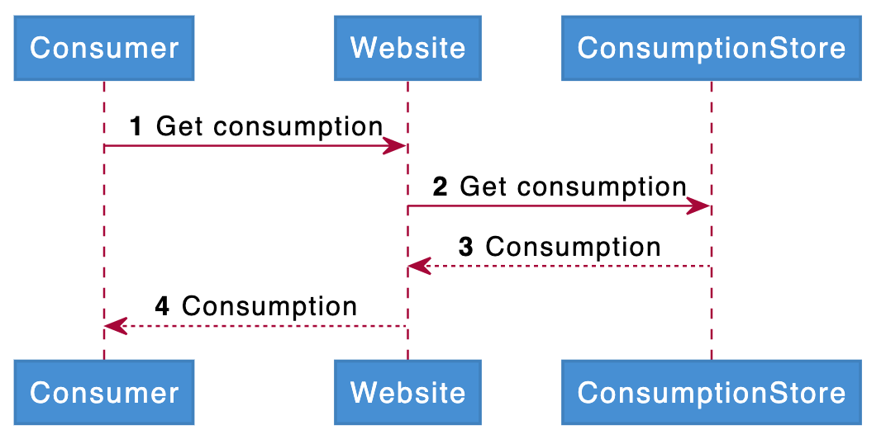

Storytelling
Kobe Bryant, arguably one of the top ten basketball players to have ever played the game was a tremendous story teller. If you have ever seen his interviews you’ll know how much impact his words have had on a generation of basketball players. Storytelling is what drives our imagination; storytelling is what took our species from tribes trying to survive by gathering and hunting our food to a species on the cusp of interplanetary space travel.
We, as a species, see patterns. Patterns to help us distinguish a snake from a branch or patterns which help us detect early stage cancer from a blurry black and white image covering a well lit background in a doctor’s office. Storytelling gives us a way to supply other people’s minds with discernible patterns and guide them to a realization which had otherwise not occurred. A good story will help you communicate your goals and your values, through a good narrative you can help everyone work towards a common goal. A good story is incredibly important when creating software. It is really hard to get 200 developers to create functioning software without aligning your goals, a good narrative is crucial to this endeavor.
In this document I will go over the ideas and concepts within good storytelling, which can help us create better Enterprise Architecture. Architects are very good at finding patterns and applying them to real world problems; but one of their pitfalls is that they tend to skip the story just so that they can read the ending. This document will try to show you how our habits and our tools cause us to miss most of the story and because of that deliver software which could be a lot better.
Diagrams vs Stories
One of our most important tools as architects; one of the tools through which most of our storytelling happens is ArchiMate. In my opinion, our focus on ArchiMate and the tools implementing the ArchiMate language muddy the story which we are trying to tell with our software. The ArchiMate language is maintained by the Open Group.
To quote the Open Group’s website: “The Open Group is a global consortium that enables the achievement of business objectives through technology standards.” They publish a modeling language called ArchiMate which can be used to generate consistent architecture diagrams. The following definition of the what the ArchiMate specification is can be found on their website:
The ArchiMate Specification provides a common language and elements to enable enterprise, business, solution and technology architects, business analysts and modelers, and software engineers to describe, analyze, and visualize the relationships among business domains in an unambiguous way. - ArchiMate, Open Group
If the goal of the Open Group is to enable us, to achieve business objectives, then why do they not focus on storytelling? Are we to assume that a diagram 1 really triggers our imagination? Let alone our understanding? Where have we described the business objectives themselves so that others will understand what our diagram describes? Without a narrative supporting the diagram we will never achieve our goals.

When we see an image like the Archimate example our brains go into overdrive and we start looking for patterns. For some reason the yellow blocks are at the top. Some seem to have more rounded corners than others and still others seem to look 3d instead of being 2d. Wow, there are different arrows!
ArchiMate tries to combat this natural reaction of our brains by setting up rules and definitions. Like every intellectual worth their salt the Open Group started whittling away at their problem space by writing down what the arrows, icons and corners mean. From the entire set of possibilities they defined their way to something they think is reasonable. But what happens next? John, from upstairs, really needs a business capability to be implemented through a certain data object by a component, and before we realize it we have a committee bloating our language with exceptions and clarifications.
This is, of course, an over-simplification of what happens; but the gist stands, nothing in the ArchiMate language is axiomatic1, everything is an interpretation and because the storytelling surrounding the rules put forth by the Open Group is lacking at best, we end up with a set of rules people need to learn by heart in order to have a chance at understanding the diagrams individuals create.
In my opinion it is safe to assume that we now understand why none of the large tech-companies bother using tools like Archi or Enterprise Architect by Sparx in their day to day development and as a consequence the gap between architecture and development has never been this big. To make matters worse, every five years we get a paradigm which is a silver bullet. It might be Clean Code and the SOLID principles, Functional Programming or it might be microservices. With a lack of common sense architecture we are faced with a plethora of choices regarding our development strategies and the implementation of our stories.
Micro-services, for example, are a way of thinking about a solution. They are patterns, guidelines and best practices shared with us by inventors. They are tools without a story. Not every story leads to a micro-service architecture and not every story needs the Interface Segregation Principle. It is true that once you are bringing your story to life like a director bringing a play to the stage, you’ll have a certain freedom to choreograph your story. But at the root of the implementation lies the story.
Like a good director, an architect can bring a story to life. They can cast the right actor for the role. They can choose to change a paragraph because it adds more gravitas to the situation. Architects bake the bread from the ingredients given to them by inventors and visionaries but the fact that the bread is needed is solely dependent on the story.
Storytelling within Architecture
I believe that effective storytelling can save us from the day to day chaos of large enterprises; let me explain why but like every good story we will need to start at a beginning:
As a consumer I would like to see how much electricity or gas I have consumed in the last month. - Essent Customer
There, our story begins. I do not need diagrams, I do not need rules or definitions, I just need plain language. With these simple words our brains can start finding patters; we can start finding truths within this statement and we can grow our understanding by talking to other people and sharing our patterns and assumptions with each other. Our tribal instincts can be met by human to human interaction. I might be completely wrong, but this storytelling, at least for me, is at the heart of Domain Driven Design. And I personally define a Domain as: "An area of expertise I can fit into my brain."
But, how can we create software if we just have a story? We will need something we can validate, we can test, we can deploy and which we can take ownership of and maintain.
Yes, this is true, but we will need to crawl before we can walk and we'll need to walk before we can run. A child needs to feel safe to get the grounding they need to face the challenges of life. Software is the same, if we do not feel safe in our assumptions, if we do not feel confident in our skills and if we do not trust our architects to work with us; we will never achieve the level of software we will need to lift our business to a higher level.
Start-ups vs Enterprises
Let us dive into a tangent; why do start-ups fail? And, why do certain start-ups surpass larger enterprises? An Enterprise should have the money to outlast the competition, right? An Enterprise should have the money to look around, hire the best people and quickly integrate great ideas into their own production, right? The answer lies in storytelling. An Enterprise has hierarchy which means that the story can become fragmented and corrupted. Within an Enterprise a lot of focus and time is spent on aligning ideas, which is nothing more than: “Getting your story straight.”
When hierarchy comes into play, the story of someone does not fit the overall narrative but is forced onto the narrative by reasons other than cohesion. Hierarchy is used when the story needs to be changed but the actors and actresses do not understand or sanction the changes. If it were otherwise, the story would just unfold and there would be no need for hierarchical decisions.
Start-ups are smaller, usually run by an enlightened despot. They have a single narrative, a single story and everyone knows the story. There is no ambiguity within the story, no doubt, no fragility and no conflicting message; there is only the story. But, they do fail, a lot. Just because the narrative is strong and unambiguous, does not mean that the story is good or that the story is gripping. There are plenty of books which I do not care to read but the ones which gripped me have never left me.
Our story continues...
From our story we can distill that we have concepts like: “consumption”, “electricity” and “consumer”. These story concepts will need to find a place in our architecture. If we follow the breadcrumbs left by our story, we will start to figure out the sequence in which the events of our story take place.
Our story starts with a consumer, consuming, electricity or gas. In this part we set up the actors in our story, we describe how they interact, what motivates our actors and what limits them. Clearly these actors need something; or there would not be a story to write. Instead of saying: “A consumer consumes electricity.” we might write something like: “Winter is coming! An unexpected cold front will hit our lovely country with a fierceness which has been unparalleled for the last twenty years. Anna feels the cold seep through her walls and turns on her central heating which is powered by heating water through the burning of gas. This heating consumes gas at an initial flow rate of per hour. This of course is only in times when it is cold. During the summer the consumption of gas might even drop to 0.” This story is starting to help us understand what “consumption” actually is and why it is important for us to show it to Anna.
To further help us understand this process we might want to draw an additional diagram:

Our diagram describes the preceded story in a different way. We do this because everyone sees patterns differently. Some people see images and lines between images and with that they form a story in their minds. Some people do not see anything but lines and blocks and cannot read the story from these lines. To be honest, not many people can. The ability to abstract something into blocks and lines is not that common; but the ability to go from an abstraction back to the actual story is something I have seen even less.
This is where tools like Archi and Enterprise Architect fall short. They do not tell a story. They help people organise their mind in lines and blocks but leave a project unattended for a year, maybe two and put a different architect on the project and you will probably hear the famous words: “This is wrong, I will have to re-do everything!” This of course is the famous mantra of the engineer and it is due to the fact that the story is not clear. It is why projects fail, it is why turn-over is such a destructive force in a company; to be fair, it is why gilded-cages were invented.
How we save Architecture
If we, as a society, want to ensure that we retain the knowledge we have built over the last 500 years; we will need to become better at telling stories. We will need to train the same skill as our ancestors trained and sit together to thrill, entertain and bring their peers together. Our stories unite us as much as our software does. Just imagine 500 years from now, what will they remember from this time? Our ArchiMate diagrams? Or the stories we’ve written in which the core of our humanity and our human endeavors are cataloged.
I do not fault the Open Group for pushing their standards, I do not fault the architecture community for following them. I just ask everyone, business and IT alike to start communicating in stories before building a single piece of software. After the story is told and everyone can tell it to their families, children, wives, neighbors; than it is time to start writing your first unit test. In the order of things, the story must come first.